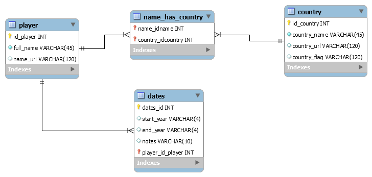

1.1 Construct an appropriate ER model implemented as MySQL tables and write a server side script (PHP or the language of your choice) to map the example data to the tables.

Original Source » populate_db.php »populate_db.phps »functions.phps »
1.2 Map the data to a XML file and construct an appropriate XSD schema to validate the instance document. (Use a PHP script to show the validation)
config.phps » output.phps »XML »XSD »validate_xml.php »validate_xml.phps »
Use the microdata schema specifications at schema.org to mark-up the data.
2.2 Design and write a server-side script to generate RDFa & JSON-LD representations.
N.B. All four representations are rendered by output.php
You should post a short HTML report (max 500 words) outlining your personal learning outcomes and the problems encountered and how you solved them.
I began by mapping the example data to my database by using the simple HTML dom parser, this allowed me to easily scrape the HTML from the source page, I then wrote a foreach loop to traverse through each <td> and whilst working through each of the elements I immediately encountered issues where there were irregular patterns in the table data. The first issue was the date entry, I wanted to split the dates by their <br/> tags and then run them through a function to separate the start year, end year and notes, but the source code showed that some were split with a <br> and others with a <br/> . As a result I had to split the dates using the following regular expression $dates = preg_split('/<br[^>]*>/i', $td[1]->innertext);. There were also issues with the hyphen that split the years, some were different to others so I resolved this by replacing all the smaller hyphens with large using str_replace('–','-',$td[1]->innertext));
The next issue arose when I came to pull out the multiple countries, their links and any flags associated with them. I had to write a conditional statement to check if there were other flag images or country links present and another conditional statement to check the previous name id against the current one, this prevented duplicate entries and allowed me to assign the associated data to the correct player name. At each key stage I would insert the data into the database using functions I'd written for each table.
At this point I noticed the ids' of the player and country tables were not auto-incrementing correctly and some numbers were being skipped. I soon discovered that this was due to me using the IGNORE keyword in my SQL query, I used this keyword to ignore duplicate entries but the id would still increment even though nothing was inserted into the database. I overcome this issues writing a conditional statement to check if an entry with the same name was present, if it wasn't then the insert query would execute, else the function would return the user id of the existing entry that would be used in the insertfk() function along with the relating country id.
When I came to creating the representations I found I had issues getting the JSON-LD code to validate, this was due to never having used JSON-LD up to this point. I spent some time reading examples online to allow me to build a better understanding of how to structure the JSON-LD context, I was then able to validate my code. I also found that when it came to validating my RDFa and MD that some validators would throw warnings where others would overlook these, I soon discovered that if I wrapped the item in a div instead of a span would achieve the correct output and would not get any errors. To allow for navigation through the representations I created an output file to GET the URL query string, then output the correct representation depending on it's value. I finished by tidying up my code an annotating where appropriate. [515 words]
config.phps » functions.phps » populate_db.phps » output.phps » header.phps » footer.phps » validate_xml.phps »
http://php.net/manual/en/domdocument.schemavalidate.php
http://simplehtmldom.sourceforge.net/
http://www.w3.org/TR/xmlschema-0/
http://www.google.com/webmasters/tools/richsnippets
http://linter.structured-data.org/
http://webmaster.yandex.com/microtest.xml
http://json-ld.org/playground/index.html